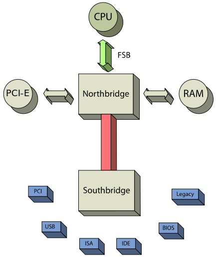

1. Počítač - základní části počítače, interní, externí, periferie, stavba a konfigurace počítače před instalací OS
Co je to počítač?
- Výpočetní systém
- HW
- I/O komponenty
- Myš, klávesnice, monitor, ...
- Funkční komponenty
- SW
- BIOS, ovladače, OS, aplikace, ...
Rozdíl mezi procesorem a CPU
- Procesor = CPU + chipset
- CPU - Central Processing Unit
- Skládá se z:
- In - Aripmetickologická jednotka (ALU) - out
- Informace + Instrukce = RAM
- Řadič
CPU
- Jádra
- L1, L2, L3
- Cache paměti
- L1, L2 - jádro
- L3 - CPU
- Frekvence v současné době v řádech miliard (GHz)
Komponenty PC
- Procesor (CPU)
- Paměť (RAM)
- Sběrnice
- Přenos dat
- Šířka Sběrnice
- Ovlivněna adresami
- Přenáší Data, Instrukce nebo Adresy
Zahoření PC
- Test počítače na maximální výkon
- Testuje se stabilita komponent
- Nedochází k Blue Screenu, obraz se neseká, ...
- Dělá se jako poslední
Oživení PC
- Dělá se po sestavení
- Nainstalování OS, ovladačů, nastavení, ...
POST - Power On Self Test
- Kontrola funkčnosti jednotlivých komponent
- Spouští se jako první (před BIOS)
- Vyšle elektřinu a čeká na odpověď
- Při erroru se spustí Beep code
- Pípání, pomocí kterého se dá poznat, která součástka je rozbitá
BIOS - Basic Input-Output System
- Ověří dostupnost komponent pomocí dat
- Spouští se po POST
- Bootovací sekvence
- Nastavení:
UEFI - Unified Extensible Firmware Interface
- Vylepšený BIOS
- Navíc oproti BIOS:
- Secure boot
- Nespustí nic, co není elektronicky podepsané
- Grafické rozhraní
- Dá se měnit z OS
Schéma procesoru

Schéma základní desky
- Intel - Northbridge, Switch
- AMD - Nortbridge, Southbridge


Skládání počítače
- Rozpočet
- K čemu bude sloužit
- Na hraní, do kanceláře, ...
- Procesor
- Frekvence
- Počet jader
- Velikost cache paměti
- Spotřeba
- Základní deska
- RAM
- Typ (DDR4, DRR5, ...)
- Počet
- Velikost
- Frekvence
- I/O komponenty (GPU, ...)
- Zdroj
- Výkon ve W
- Sečtení náročnosti všech komponent vynásobený 1,5 = Doporučený výkon zdroje
- Skříň (Case)